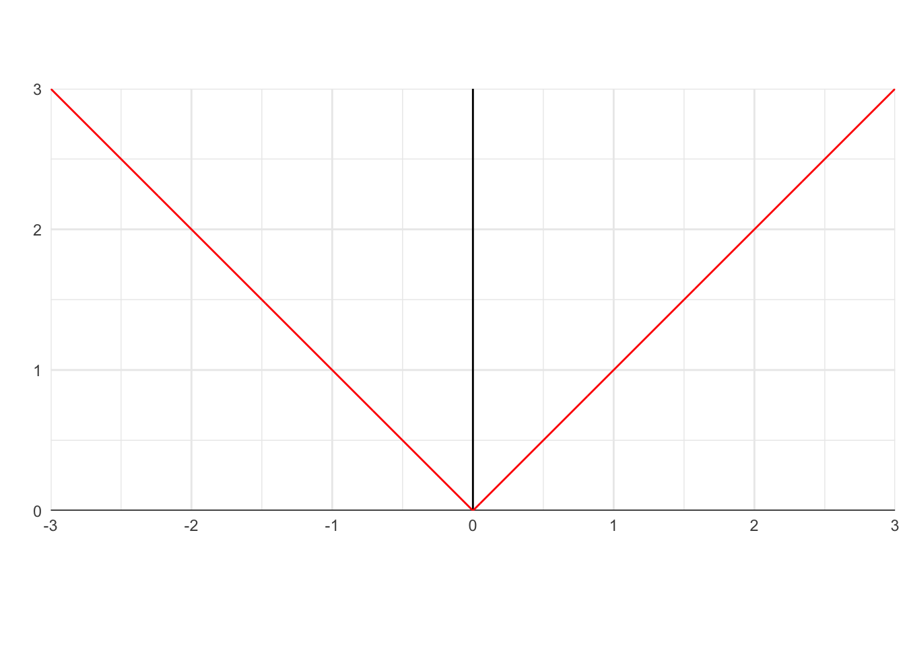
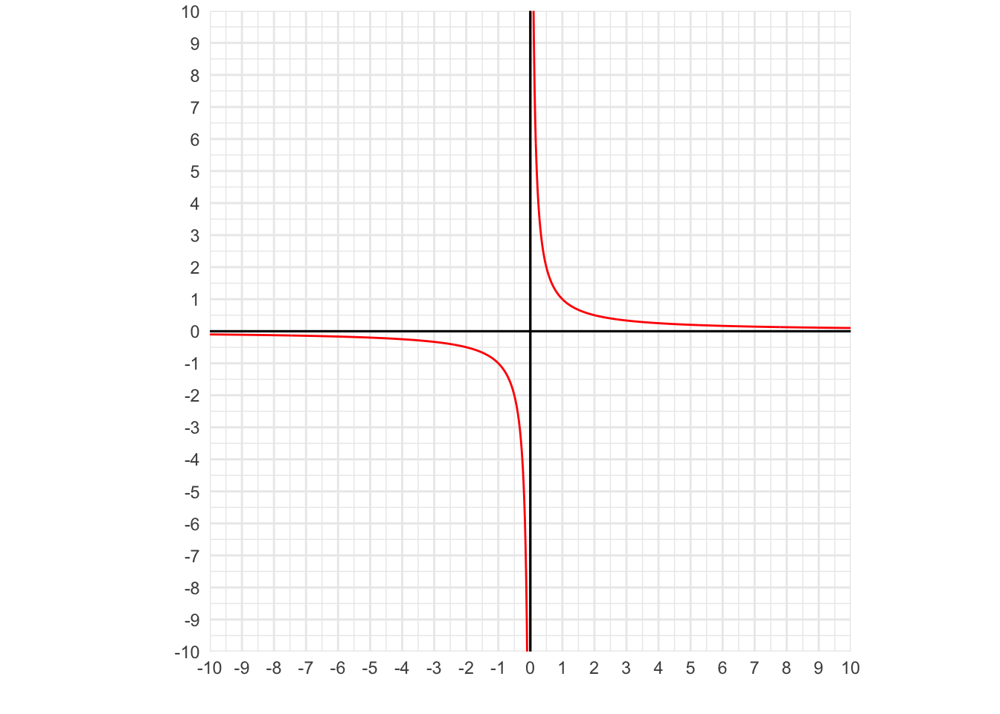
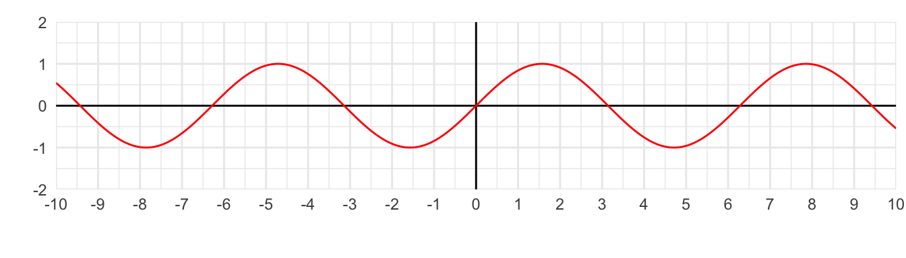
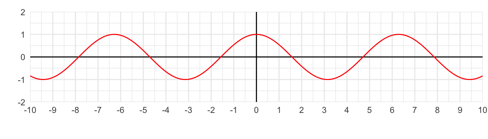
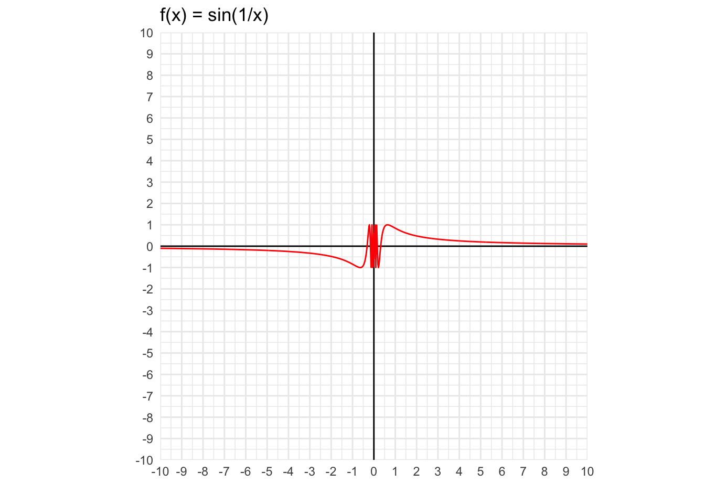
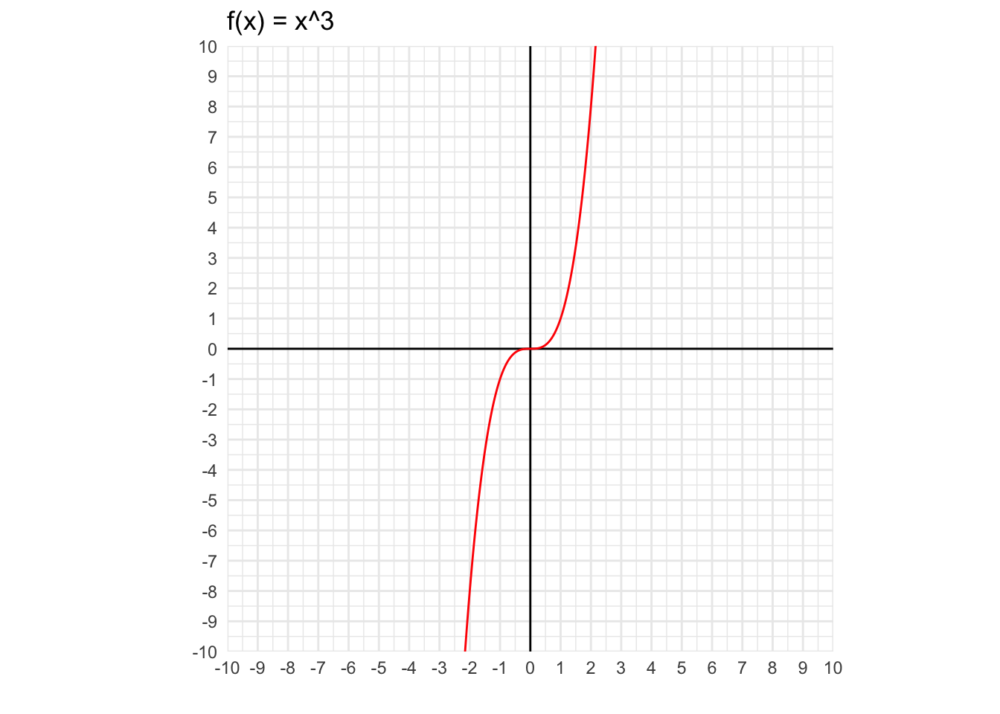
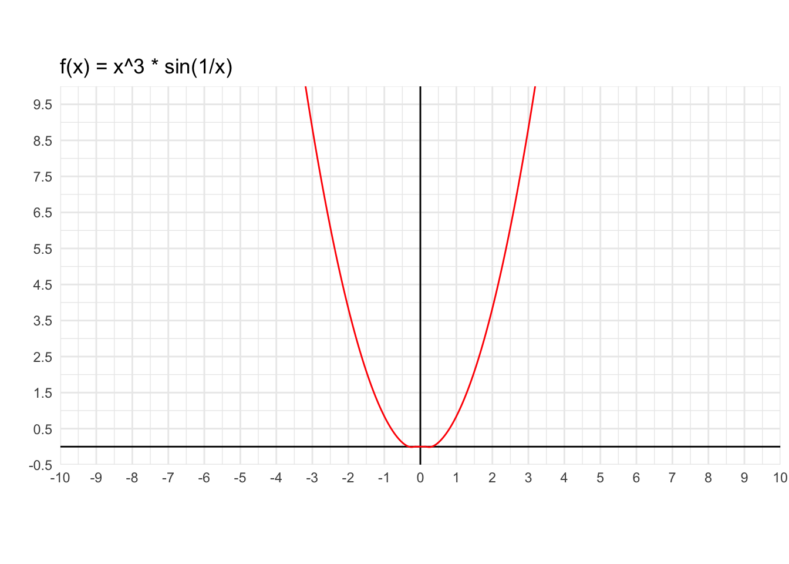

8 Função contínua
Anotações das aulas
Definição
Seja \(f: A \subset \mathbb{R} \rightarrow \mathbb{R}\) uma função.
Dizemos que \(f\) é contínua em \(p \in \mathbb{R}\) se:
Existe \(f(p)\) (conceito estático)
Existe \(\lim_{x \to p} f(x)\) (conceito dinâmico)
\(\lim_{x \to p} f(x) = f(p)\)
Obs: Contínua no ponto \(p\) é um conceito local, não importa nas outras partes do gráfico.
Obs2: A continuidade tem relação com uma “quebra” ou “pulo” no gráfico da função.
Nota
Pulei a questão 17, o professor desenhou o gráfico de uma função para demonstrar os conceitos.
P18
Sejam \(f\) e \(g\) funções contínuas em \(p\). Mostre que \(f(x)+g(x)\) é contínua em \(p\).
\[h(x) = f(x) + g(x)\]
Conceito estático: \(h(p) = f(p) + g(p)\)
Conceito dinâmico:
\[ \lim_{x \to p} h(x) = \lim_{x \to p} f(x) + \lim_{x \to p} g(x) \]
\[ = \lim_{x \to p} \cancelto{f(p)}{f(x)} + \cancelto{g(p)}{g(x)} \]
\[ = f(p) + g(p) = h(p) \] 3. Comparação entre limite e valor da função:
\[ \lim_{x \to p} h(x) = h(p) \]
Logo \(h\) é contínua em \(p\).
Importante
Se \(f\) e \(g\) são contínuas no ponto \(p\), então \(h(x) = f(x) + g(x)\) é contínua no ponto \(p\).
Exemplo
Considerando a função \(f(x) = x + 4\):
\(f(x) = x\) é uma função contínua.
\(f(x) = 4\) é uma função contínua.
A soma de duas funções contínuas é uma função contínua.
Logo, \(f(x) = x + 4\) é uma função contínua.
P19
Sejam \(f\) e \(g\) funções contínuas em \(p\). Mostre que \(f(x) \cdot g(x)\) é contínua em \(p\).
O argumento é similar à P18.
\[h(x) = f(x) \cdot g(x)\]
Conceito estático: \(h(p) = f(p) \cdot g(p)\)
Conceito dinâmico:
\[ \lim_{x \to p} h(x) = \lim_{x \to p} f(x) \cdot \lim_{x \to p} g(x) \]
\[ = \lim_{x \to p} \cancelto{f(p)}{f(x)} \cdot \cancelto{g(p)}{g(x)} \]
\[ = f(p) \cdot g(p) = h(p) \] 3. Comparação entre limite e valor da função:
\[ \lim_{x \to p} h(x) = h(p) \]
Logo \(h\) é contínua em \(p\).
Importante
Se \(f\) e \(g\) são contínuas no ponto \(p\), então \(h(x) = f(x) \cdot g(x)\) é contínua no ponto \(p\).
P20
Sejam \(f\) e \(g\) funções contínuas em \(p\), com \(g(p) \neq 0\). Mostre que \(h(x) = \frac{f(x)}{g(x)}\) é contínua em \(p\).
O argumento é similar à P18 e P19.
O denominador não pode ser zero, então \(g(p) \neq 0\).
\[h(x) = \frac{f(x)}{g(x)}\]
Conceito estático: \[h(p) = \frac{f(p)}{g(p)}\]
Conceito dinâmico:
\[ \lim_{x \to p} h(x) = \lim_{x \to p} \frac{f(x)}{g(x)} \]
\[ =\frac{f(p)}{g(p)} \]
- Comparação entre limite e valor da função:
\[ \lim_{x \to p} h(x) = h(p) \] Logo \(h\) é contínua em \(p\).
P21
Sejam \(f\) e \(g\) funções com \(Img \subset D_f\). Suponha que \(g\) seja contínua em \(p\) e que \(f\) seja contínua em \(g(p)\). Mostre que \(h(x) = f(g(x))\) é contínua em \(p\).
Lembrando o conceito de função composta
Considerando as funções:
\(f(x) = \sin x\)
\(g(x) = x^3\)
Podemos escrever duas funções compostas:
\[f(g(x)) = f(x^3) = \sin (x^3)\]
\[g(f(x)) = g(\sin x) = (\sin x)^3\]
Atenção: a ordem importa!
\[h(x) = f(g(x))\]
\(g\) é contínua em \(p\)
\(g(p) = q\)
\(f\) é contínua em \(q\)
\(h\) é contínua em \(p\).
Conceito estático: \[h(p) = f(g(p))\]
Conceito dinâmico:
\[ \lim_{x \to p} h(x) = \lim_{x \to p} f(g(x)) \]
\[ = \lim_{x \to p} f(\cancelto{g(p)=q}{g(x)}) \]
\[ = \lim_{x \to p} \cancelto{f(q)}{f(g(x))} = f(q) \]
Me perdi no passo a seguir, tentar entender! Como o \(f(q)\) foi substituído por \(f(g(p))\)?
\[ = f(g(p)) = h(p) \]
- Comparação entre limite e valor da função:
\[ \lim_{x \to p} h(x) = h(p) \]
Logo \(h\) é contínua em \(p\).
P22. Em que pontos as funções abaixo são contínuas?
1. \(f(x) = x\)
Seja \(p \in \mathbb{R}\), então:
Definição da função no ponto: \(f(p) = p\).
Cálculo do limite: \(\lim_{x \to p} f(x) = \lim_{x \to p} x = p\)
Comparação entre limite e valor da função: \(\lim_{x \to p} f(x) = f(p) = p\).
Logo \(f\) é contínua em \(p\).
Como o limite existe e é igual ao valor da função em qualquer ponto \(p \in \mathbb{R}\), a função é contínua em todos os pontos reais.
1’. \(f(x) = |x|\)

Testando \(f(0)\):
Definição da função no ponto: \(f(0) = 0\).
Cálculo do limite: \(\lim_{x \to p} f(x) = \lim_{x \to 0} x = 0\)
Comparação entre limite e valor da função: \(\lim_{x \to 0} f(x) = f(0) = p\).
Logo \(f\) é contínua em \(f(0)\).
1’’. \(f(x) = \frac{1}{x}\)

Pensando a função por suas partes:
\(f(x) = 1\) é uma função contínua.
\(f(x) = x\) é uma função contínua.
Porém o quociente não é contínuo em todos os pontos (por exemplo, em \(x = 0\)).
Logo, \(f\) não é contínua em \(x = 0\).
2. \(f(x) = k\), onde \(k \subset \mathbb{R}\) (função constante)
Seja \(p \in \mathbb{R}\), então:
Definição da função no ponto: \(f(p) = k\).
Cálculo do limite: \(\lim_{x \to p} f(x) = \lim_{x \to p} k = k\)
Comparação entre limite e valor da função: \(\lim_{x \to p} f(x) = f(p) = k\).
Logo \(f\) é contínua em \(p\).
3. \(f(x) = \sin x\)

A função seno é contínua em todos os pontos reais.
\(f(x)\) é contínua em qualquer ponto p, sendo \(p \in \mathbb{R}\).
4. \(f(x) = \cos x\)

A função cosseno é contínua em todos os pontos reais.
\(f(x)\) é contínua em qualquer ponto p, sendo \(p \in \mathbb{R}\).
4’. \(f(x) = \tan x\)
Existem pontos onde a função não é contínua, como por exemplo em \(x = \frac{\pi}{2}\).
5. \(f(x) = 3x^7 + 8x + 1\)
Não encontrei a resposta nas anotações.
Podemos pensar a função \(f(x)\) a partir de suas partes:
\(f_1(x) = 3x^7\) é uma função contínua.
\(f_2(x) = 8x\) é uma função contínua.
\(f_3(x) = 1\) é uma função constante (e portanto contínua).
\(f\) é contínua em todos os pontos, pois \(f\) é somas de funções contínuas.
6. \(f(x) = \frac{3x^7 + 8x + 1}{x^4 + 1}\)
Não encontrei a resposta nas anotações.
Podemos pensar a função \(f(x)\) a partir de suas partes:
\(f_1(x) = 3x^7 + 8x + 1\) é uma função contínua (exercício anterior).
\(f_2(x) = x^4 + 1\) é uma função contínua.
\(f\) é contínua em todos os pontos, pois \(f\) é somas e quociente de funções contínuas com denominador não nulo.
7. \(f(x) = \sin (x^2 + x + 2)\)
Anotações estavam incompletas.
Podemos pensar a função \(f(x)\) a partir de suas partes:
\(f_1(x) = \sin(x)\) é uma função contínua.
\(f_2(x) = x^2 + x + 2\) é uma função contínua.
\(f\) é contínua em todos os pontos, pois \(f\) é somas e composta de funções contínuas.
8. \(f(x) = \frac{3x^2 \cdot \sin x + \cos (x^7 + 1)}{x ^4 + 1}\)
Podemos pensar a função \(f(x)\) a partir de suas partes:
\(f_1(x) = 3x^2\) é uma função contínua.
\(f_2(x) = \sin x\) é uma função contínua.
\(f_3(x) = \cos (x)\) é uma função contínua.
\(f_4(x) = x^7 + 1\) é uma função contínua.
\(f_5(x) = x^4 + 1\) é uma função contínua.
Modelo de resposta: importante!
\(f\) é contínua em todos os pontos, pois \(f\) é somas, produtos, compostas e quociente de funções contínuas com denominador não nulo.
P23
Em que pontos a função abaixo é contínua?
\[ f(x) = \left\{x^3 \cdot \sin \frac{1}{x} \text{ se } x \neq 0, \text{ e } 0 \text{ se } x = 0 \right\} \]
Vamos separar em dois casos!
1. \(x \neq 0\)
\(f(x) = x^3 \cdot \sin \frac{1}{x}\) é contínua pois \(f\) é produtos, composta, e quociente de funções contínuas com denominador não nulo.
\[ f(x) = x^3 \cdot \sin \frac{1}{x} \]



2. \(x = 0\)
Definição da função no ponto: \(f(0) = 0\).
Cálculo do limite: \[ \lim_{x \to 0} f(x) = \lim_{x \to 0} x^3 \cdot \sin \frac{1}{x} \]
Como \(\lim_{x \to 0} x^3 = 0\) e \(g(x) = \sin \frac{1}{x}\) é limitada, pois \(|\sin \frac{1}{x}| \leq 1, \forall x \neq 0\), logo pelo teorema da função limitada (T.F.L.), o limite acima existe e vale zero.
- Comparação entre limite e valor da função: \(\lim_{x \to 0} f(x) = f(0) = 0\).
Logo \(f\) é contínua em \(0\).
Resposta final da P23
\(f\) é contínua em todos os pontos.